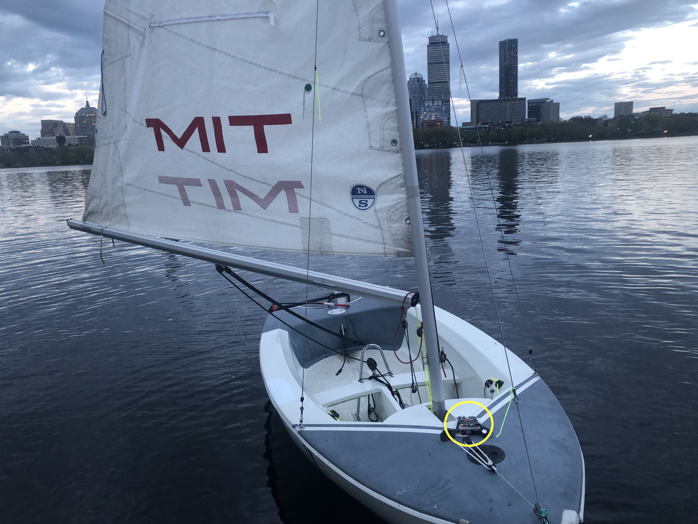
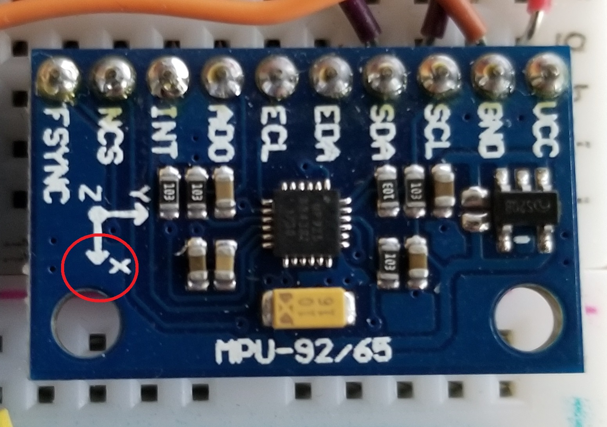
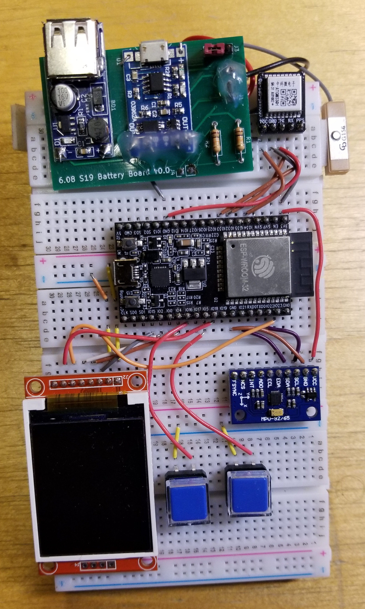
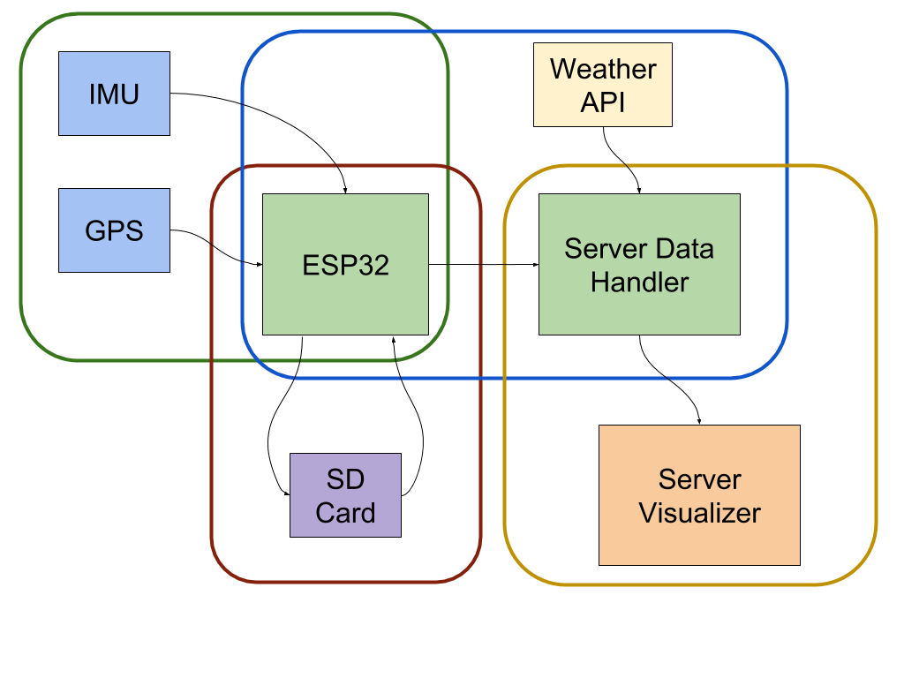

#Overview
The Dinghy Thingy is a small, portable device enclosed in a water-proof box that would be mounted to the inside of a sailing boat. The device would collect data while the boat is on the water, and store said data to an SD card, after which it could be uploaded to our server, where our code would conduct helpful analysis and visualization.
We were inspired to do this project because one of our team members is an avid sailor and mentioned how helpful it would be to have a device that can collect data about a boat when it’s on the water. While these types of programs do currently exist, they are typically specialized and do only one task, and are also ludicrously expensive, so we decided to make a version of our own. Our implementation uses an IMU to gather information about the heel of the boat and a GPS to track the path of the boat on the water. This data is then stored to an SD card and uploaded to our server once the internet is available, where this data is presented in a friendly, readable way using plots and potentially animations. The device is battery powered and optimized in such a way that it lasts several hours so that the sailor does not have to worry about it dying while they’re on the water.
<center>
<video controls muted autoplay width="1000">
<source src="./img/Charles_River_Boat_Ride.mp4">
</video>
</center>
<center>

<video controls muted autoplay width="600">
<source src="./img/tech.mov">
</video>
</center>
#Instructions
You are about to use the Dinghy Thingy, the ultimate device to improve your sailing experience and become the expert sailor you always dreamed of. Before we get into action, let's go over some necessary precautions you need to take to conserve your device for future trips as wells as the instructions on how to use it correctly.
####Step 1: Installing the Dinghy Thingy
When setting up the device, you need to take into consideration its orientation to record the proper measurements. Failure to do so will still provide you with the correct path of the boat but would not give you the inclination in the different parts of the trip as well as the right velocity. If you are only interested in recording your position at any point on the journey, you can place the device on a firm surface and securely fasten it so that it does not move and damage with the movement of the boat, as well as to avoid losing it in the event of capsizing.
If you also want to have a record of data like the orientation of your boat at any point in the trip as well as the inclination, you would need to place the device in the correct orientation. If you look at your Dingy Thingy you would observe in the center a blue board that looks like the following:
<center>

</center>
<center>
*Figure 1: Dinghy Thingy IMU*
</center>
That is the part of your device that gives the data about your boat's orientation. You would need to place the device such that the arrow with an X(enclosed in a red circle in the picture) is pointing downwards and is parallel to the mast of your boat. The other arrow which is marked with a Y has to be pointing to the right side of the boat. After placing it this way, your device should be facing the back of the boat. Remember to fasten it so that it does not fall off the boat in case of capsizing. Now you are ready to go sailing!
####Step 2: Start and Stop Recording
Before starting the trip, you want to make sure to let Dinghy Thingy know that you are about to start. To do so, we have included a series of buttons for you to communicate with the device. The button to the left is your Start/Stop indicator. You press it to start recording data, and you press it again to stop the recording. Once you are satisfied with your trip, and you are near a Wi-Fi access point, you can press the right button to upload your trip's data to the server. Note that pressing the right button multiple times is just going to send the data several times. Therefore one single press of the button is enough to get your trip in the server ready to be analyzed.
####Step 3: Using the website
Are you ready to view your last trip? We provide a website with a straightforward interface so that you can understand every single aspect of your journey. You can access our site through ["Dinghy Thingy"](http://608dev.net/sandbox/sc/mayigrin/final_project/parse_data.py) and take a look at your performance. If you want to learn more about how to navigate through our website as well as everything available to you, check the "Website" section below for more details.
#Website
Below you can find the website that we will be using to display the data collected on every trip. As you can see, there is a Menu on top that allows you to move through the different pages of the website. The 'Home' button would allow you to come back to the main page at any moment in case you want to look up for any new boat or refresh the page if you submitted new data to the server. The drop-down menu 'Select Your Boat ID' will display all of the boats that we currently have data in our system. Select the one you are interested in, and it will redirect you to a page displaying the data. There is information on the main page about current weather conditions. You can see the current temperature in degrees Fahrenheit and the speed of wind in miles per hour. We don't want for our avid sailor to be looking at the website when there is a perfect day outside to take out a boat.
Once selected a boat, you would move to a page that contains all the information about your trip. Note that on top of the page you can still find the Menu to move throughout the website at any moment. This page consists of two main graphs:
<ol>
<li>
<strong>Path of the boat over time:</strong> This graph will help you locate the entire trajectory of the boat by using markers on a map. The green marker indicates the beggining of the trip, and the red market indicates the end of the trip. All the other markers indicates different positions of the boat along the trip.
</li>
<li>
<strong>Heel of the boat over time:</strong> In this graph you can find a plot of the percent tilt of the boat versus the time of the trip. You can zoom in or out to have a better picture of a set of points in the graph
</li>
<li>
<strong>Animation of the Path of the Boat:</strong> You can move the slide in this graph to see a step by step representation of the path of the path from start to finish
</li>
</ol>
We are planning on including more graphs in the future together with an animated graph that includes multiple features of your trip. You can find our website at this specific link: "http://608dev.net/sandbox/sc/mayigrin/final_project/parse_data.py". You can also take a look at it right now in the section below with some sample data that we collected.
<iframe src="http://608dev.net/sandbox/sc/mayigrin/final_project/parse_data.py", align="left", width="1500", height="1000">
</iframe>
#System Analysis
###Preview
Our system consists can be divided into two parts: the Server side, which contains all the code regarding the permanent storage of the data and the visualization of that same data, and the ESP side, which is in charge of operating the state machine to sense data using the GPS and the IMU and store that data into an SD card while maintaining an efficient power consumption. Our Server-side code is written mainly in Python with some HTML code to make the website more accessible. All of the ESP side code is written in C++ since we are using an Arduino as the microprocessor of our device. To have our code functioning, we first needed to write function capable of getting the data from the IMU and GPS and saving it into the SD Card. Once that was complete, we then needed to look for ways to read that data from the SD cards and sending it in POST requests to the server. After that step, we created a database in the server together with a website capable of taking data from the database and displaying it in a user-friendly way.
<center>

</center>
<center>
*Figure 2: Configuration of Dinghy Thingy*
</center>
###State Machine Analysis
The Dinghy Thingy system runs on a finite state machine. We have a "Root" which represents the state where no data is being sensed or sent to the server, it is just waiting for the button press to enter into the "Ready" state. The "Ready" state remains for a time of around one second to enter into the "Sense" state where data is collected from the IMU and the GPS modules; once this data is collected, the machine returns to "Ready". The data collected is being written into a buffer that once filled makes the "Ready" state to transition into the "Write to Flash" state where the buffer sends the data into the SD card and the buffer gets emptied before returning into the "Ready" state. This process continues until the user presses the button and the machine goes into the "Upload" state where it would try to connect to the server to send the data in the SD card and would not leave this state until it sends the data successfully. Once this is done, the machine returns to the "Root" state and waits for another user input for a new trip to happen. Below you can find a diagram representing our finite state machine.
<center>
<img src="./img/Final FSM.png" width="1000" />
</center>
<center>
*Figure 3: State Machine Diagram*
</center>
###Functional Analysis
In this project, we are not using any additional sensors or new parts. Our system consists of an ESP32, a GPS module, an IMU, two buttons, and a LED Display that supports the attachment of an SD card. We also have a set of function managing the POST requests and creating the databases on the server as well as some tasks to use the databases to create graphs and maps to display the data. Below you can find a detailed description of the function of each part and all the tasks involved in it, along with a system block diagram representing the division of functionalities in our device.
#####Components Description
<ul>
<li><strong>ESP32</strong>: Microcontroller that contains the code that runs the internal procedures in the device.
<ul>
<li>```send_info(char* info, char* response_buffer)```:Takes the info from passed from the SD card and makes an http request</li>
<li>```wifi_connect()```: Connects to the Wi-Fi before sending the data</li>
<li>```do_http_request(char* host, char* request, char* response, uint16_t response_size, uint16_t response_timeout, uint8_t serial)```: Makes the http request to the server. This function is the same we have been using to make the requests throughout the semester in the class</li>
<li>```char_append(char* buff, char c, uint16_t buff_size)```: This function is used to add the necessary characters to the http request before sending it. We have been using this function throughout the semester in the class</li>
</ul>
</li>
<li><strong>FSM</strong>: Handles all state transitions
<ul>
<li>```set_state(STATE_T new_state)```:Transitions to the requested new state by calling that state's "enter_state" method</li>
<li>```advance_state()```:Calls the correct "update_state" method based on the current state</li>
</ul>
</li>
<li><strong>GPS Module</strong>: During the "Sense" state the GPS will transmit the coordinates of the boat as well as the current time
<ul>
<li>```init_gps()```:Initializes the gps when the esp starts</li>
<li>```read_gps()```:Gets raw data from the gps and parses the raw data into year, month, day, hour, minute, second, longitude and altitude. Thus, getting data prepared to be sent to the SD card</li>
</ul>
</li>
<li><strong>IMU</strong>: During the "Sense" state the IMU will gathered data about the X acceleration, Y acceleration and Z acceleration
<ul>
<li>```init_imu()```:Initializes the IMU when the esp starts</li>
<li>```read_imu() ```:Reads data from imu and saves the x,y,z accelerations</li>
</ul>
</li>
<li><strong>SD Card</strong>: During the "Write to Flash" state the buffer would save the data into the SD memory and all the data from the buffer would be erased. An example of the SD Card we use can be found here: [SD]( https://www.amazon.com/SanDisk-Ultra-microSDXC-Memory-Adapter/dp/B073JWXGNT/ref=sr_1_3?hvadid=177219289831&hvdev=c&hvlocphy=9002029&hvnetw=g&hvpos=1t1&hvqmt=e&hvrand=2054804712481173564&hvtargid=kwd-4840975295&keywords=micro+sdhc+card&qid=1555230940&s=gateway&sr=8-3)
<ul>
<li>```sd_write(SENSOR_READING_T *data_buffer, int size)```:Given a buffer of sensor readings, and the size of that buffer, formats lines of SD card readings and appends those lines to the data file.</ul>
<li>```read_and_upload(fs::FS &fs, const char * path)```:Reads each line of the data file, constucting post requests of (20) records, and sending each request to the server.</li>
<li>```writeFile(fs::FS &fs, const char * path, const char * message)```:Writes the provided string to the file on the SD card</li>
<li>```appendFile(fs::FS &fs, const char * path, const char * message)```:Appends the provided string to the file on the SD card</li>
<li>```readFile(fs::FS &fs, const char * path, char* output)```:Reads the entire file to the provided char buffer</li>
<li>```init_sd()```:Initiates connection to the SD card and mounts the filesystem. Checks if the data file exists, and create if it does not exist</li>
</ul>
</li>
<li>
<strong>Server Data Handler</strong>: In charge of creating the database from the POST Request
<ul>
<li>```request_handler(request)```:Automatically called when a GET or POST request is made to this file. Handles both POSTs and GETs, and returns the appropriate response, be it a simple string or HTML page for a full website</li>
<li>```parse_csv_categories(line)```:Parses the list of categories given in a POST request so that it can be used to create a database if necessary</li>
<li>```parse_csv_data_line(line, categories)```:Parses a line of data from a POST request</li>
<li>```parse_csv_data(data, categories)```:Parses data from a POST request by splitting it up into lines and sending it to parse_csv_data_line</li>
<li>```create_database(categories)```:Creates a database (if necessary) for storing data given a list of categories to use as columns in the table</li>
<li>```insert_into_database(data)```:Inserts a line of data into the database</li>
<li>```get_dateandboat_data(date, boatnum)```:Given a date and boat number, creates a data frame of that boat’s data from that day from the database</li>
<li>```get_boat_data(boatnum)```:Given a boat number, creates a data frame of that boat’s data from the database</li>
<li>```averaging_filter(inputs, stored_values, order)```:Filter to eliminate noise in the readings and get more accurate data</li>
</ul>
</li>
<li>
<strong>Server Visualizer</strong>: All the information from the database would be collected and represented using graphs and maps on our own website
<ul>
<li>```embed_map(df)```:Given a data frame, makes a properly formatted URL to get an image of the GPS data in the data frame plotted on a map, using the Google Maps Static API</li>
<li>```gen_animated_plot(df, boatnum)```:Given a data frame and a boat number, makes an animated bokeh plot showing the path of the boat over time, and saves that plot to an HTML file named “animation_[boatnumber].html”</li>
<li>```plot_heel(df,boatnum)```:Given a data frame and a boat number, makes an animated bokeh plot showing the heel of the boat as a percent tilt over time, and saves that plot to an HTML file named “heel[boatnumber].html”</li>
<li>```single_boat_response(date, boatnum)```:Given a date and boat number, returns HTML code for a website with plots showing the paths taken (both as a static image from Google Maps, and as an animated plot) and the heel of that boat on that day.</li>
<li>```set_up_webpage(date, boatnum)```:Given a date and boat number, reads a template HTML file and uses that to create an HTML file named “boat[boatnum].html” that is a web page with plots showing the paths taken (both as a static image from Google Maps, and as an animated plot) and the heel of that boat on that day. The function then returns the name of the file.</li>
<li>```set_up_webpage_without_date(boatnum)```:Given a boat number, reads a template HTML file and uses that to create an HTML file named “boat[boatnum].html” that is a web page with plots showing the paths taken (both as a static image from Google Maps, and as an animated plot) and the heel of that boat. The function then returns the name of the file.</li>
<li>```response(date)```:Given a date, returns the HTML code for a website with a homepage and subpages (accessible through a dropdown menu) with plots showing the paths taken (both as a static image from Google Maps, and as an animated plot) and the heel of a boat on that day. Each subpage shows data associated with a different boat number, and the homepage displays the current weather data and provides access to all of the subpages for boats that sailed that day. Reloading the website refreshes the data so that if any new data was added, it will be displayed.</li>
<li>```response_no_param()```:Returns the HTML code for a website with a homepage and subpages (accessible through a dropdown menu) with plots showing the paths taken (both as a static image from Google Maps, and as an animated plot) and the heel of a boat over time. Each subpage shows data associated with a different boat number, and the homepage displays the current weather data and provides access to all of the subpages for boats that it has data for. Reloading the website refreshes the data so that if any new data was added, it will be displayed.</li>
</ul>
</li>
<li>
<strong>Weather API</strong>: Manages all the information regarding obtaining the current weather conditions from the internet and displaying it on the website
<ul>
<li>```get_weather()```:Gets data from the OpenWeatherMap API and returns the appropriate text and gif to be displayed on the home page of the website.</li>
</ul>
</li>
</ul>
<center>

</center>
<center>
*Figure 4: System Block Diagram*
</center>
### Extra Components
<ul>
<li><strong>Waterproof Box:</strong> Used to store our device to make it resistant to different weather conditions as well as the possibility of it going underwater in case of capsizing.
</li>
</ul>
#Energy Management
Boat trips vary in length depending on the desired course, weather conditions or to enjoy of a sunny day in the water. Our team took that into consideration when designing our product, making it efficient enough to be taken into the sea for more than 8 hours with a continuous recording of the data.
Our battery has a capacity when fully charged of around 1500 mAH with a nominal voltage of 3.7V but it usually fluctuates from 3.2V to 4.2V. Our device has three central states which utilizes different components with different consumption. The table below shows the various states and the current consumed during each of those states:
<center>
<table>
<tr>
<th>State</th>
<th>Consumption</th>
</tr>
<tr>
<td>Sensing</td>
<td>0.12 A</td>
</tr>
<tr>
<td>Rooting</td>
<td>0.12 A</td>
</tr>
<tr>
<td>Uploading</td>
<td>0.15 A</td>
</tr>
</table>
</center>
<center>
*Figure X: Table mapping state to current consumption*
</center>
These consumptions allowed us to analyze different situations and how long would the battery last on each of them. At first, we calculated how long would the battery last if there were no need to upload the data into the server (assuming you can charge the device and upload the data afterward). Assuming the battery was fully charged at the start of the trip, the device could be continuously recording data for a maximum of 12.5 hours until the battery depletes. Usually, boat trips and races do not last that long, but it gives flexibility to the user to extend its trip without worrying about running out of battery. Of course, we always recommend charging the device before every trip for all parts to be fully functional, and the sensors do not stop working.
On a more realistic scenario, we calculated how long a boat trip could last so that once back on land, the user can upload the data immediately without the need for charging the device. Based on some measurements, we have an upload rate of 4.5 sec/post-request. Furthermore, we are currently sending data at a rate of 10 readings/post-request. Given this rates and the current consumed on the states from the table above, we calculated that a user can go on a trip for a maximum of 8 hours and still be able to come back to land and upload all the data collected to the server without the need of charging the device.
Note that these calculations are done using average rates of upload based on experiments and also assuming that the battery is fully functional and has not reduced its capacity over some time. The actual lasting of the battery when the device is functioning can vary, but the above calculations are useful indices of the capabilities of our system.
# Design Challenges
The Dinghy Thingy team went through a whole process of growth when designing and creating this project. As stated in the introduction, we decided to embark in the creation of this project due to the passion of one of the members with sailing and his desire to have an accessible device to record his performance on every trip. Dinghy Thingy is a project that allows for the inclusion of an infinite amount of functionalities, therefore keeping it accessible was one of our biggest challenges. We first started with the idea of including a screen that was always showcasing the data being recorded so that the user could be aware of how he is performing on the trip. Although at first, this seemed like an excellent idea, we did not take into consideration the capabilities of our battery and having the screen on during the whole trip would considerably reduce the lifetime of the device, and therefore not making it viable. Once that was discarded, we had to decide on how often we had to sense data during the trip. This is a crucial step in the design because it would not only determine how much data is going to be stored in the SD and then displayed on the website, but it would also determine the power consumption of our device since it would have the sensors working more time. We ended up deciding on collecting data once every second since it had the perfect balance between a viable amount of data and a battery life of almost three times the average duration of a boat trip. Apart from those last two challenges, most of the decisions we had to make were on the website part of our project and how we would like to display the data. Since we have limited time for this project, we decided to show only the necessary data like position and tilt, and later expand on other areas like the velocity of the boat, as well as an animated version of the graphs.
<center>
<img src="./img/The Team.jpg" width="800" />
</center>
<center>
*Figure 5: The Team*
*(From left to right: Xiaoyang Zhuang, Raymond Huffman, Maya Nigrin, Jose Muguira)*
</center>
# Conclusions
Dinghy Thingy has been a successful project, and all the milestones that we set at the beginning of the project were accomplished. Our team managed to create a device that could potentially impact many sailors looking for improvement. We are looking forward into implementing this device on the MIT Sailing Team as a way of instructors and coaches to see the performances of the several members of the team and use this information to provide better training in the future. We are planning on improving several areas of the project that were not developed to perfection due to the time constraint of the project. Those areas could include improving our animation and graphs on the website to display more valuable information as well as expanding the project not only to be composed of a single Dinghy Thingy device but a series of devices positioned at different parts of the boats so that we can synchronize the data collected by each of them to get really accurate measurements of the performance of the boat. We would like to thanks everyone who supported us during the development of the project, especially our instructor Joe Steinmeyer as well as the TAs and LAs who were always ready to help us solve any problem presented. What are you waiting for? Let's go sailing!
####GitHub Link
[Dingy Thingy](https://github.mit.edu/rhuffman/DinghyThingy)